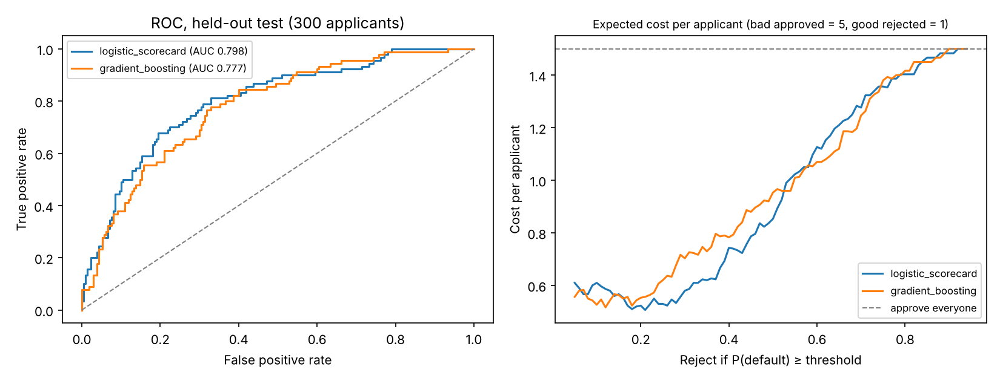

Credit Default Scorecard
Approve or decline a loan by business cost, with reasons
A logistic scorecard ranks 1,000 German Credit applicants by default risk, chooses the approval cut-off by expected cost instead of 0.5, and explains every decline in points. The cost-based cut-off lowers expected cost per applicant by 34%.
From application to decision
pipeline + test results- 01Application20 characteristics
- 02Encodeone-hot; fair-lending fields dropped
- 03Modelregularised logistic regression
- 04Cut-offchosen by 5:1 expected cost
- 05Scorecard600 pts at 50:1 odds, +20 to double
- 06Decisionapprove / decline + reason codes
Expected cost per applicant (lower is better)
Bad rate among approved loans (lower is better)
~/screens
See it working

[01] ~/the-problem
Why it matters
Every lender decides approve or decline for each application, and the costs are lopsided: a loan that defaults loses far more than a good loan earns. Lenders must also explain declines to the applicant.
So the model must rank risk, the cut-off must reflect real costs rather than a default 0.5, and every decision needs plain-language reasons. That is why an explainable logistic scorecard is the industry standard.
Under a 5:1 cost ratio the best policy approves only 30% of applicants. That is the price of the cost assumption, not a property of the model.
[02] ~/how-it-works
How it works
Rank risk, set the cut-off by cost, and explain every decision in points.
- 01
Prepare fairly
1,000 applicants, 70/30 stratified split; sex/marital status and foreign-worker status are removed on fair-lending grounds.
- 02
Compare two models
Regularised logistic regression vs gradient boosting, judged by ROC-AUC, Gini, KS and PR-AUC with 5-fold cross-validation.
- 03
Choose by cost
Approving a borrower who defaults costs 5× rejecting a good one; the cut-off is picked on training folds only, then applied once to the test set.
- 04
Turn it into points
Coefficients scale to a scorecard: 600 points at 50:1 good:bad odds, 20 points to double the odds.
- 05
Explain declines
Reason codes list the characteristics that cost this applicant the most points compared with an average applicant.
- 06
Reject bad input
decide.py rejects missing fields or unknown values with a clear error that lists what is allowed.
[03] ~/results
Results
Held-out test set of 300 applicants; the cut-off was chosen on the training folds only.
| POLICY | APPROVED | DEFAULTS CAUGHT | BAD RATE | GOOD REJECTED | COST / APPLICANT |
|---|---|---|---|---|---|
| Cost-based (0.14) | 30.0% | 91.1% | 8.9% | 128 | 0.56 |
| Threshold 0.5 | 78.7% | 47.8% | 19.9% | 21 | 0.85 |
| Approve everyone | 100% | 0% | 30.0% | 0 | 1.50 |
The simpler logistic scorecard beat gradient boosting (AUC 0.798 vs 0.777), so it is the one to deploy. A real lender would also count profit from good loans, which would move the cut-off.
HONEST LIMITS
1,000 applicants from 1970s Germany: the results show the method, not current credit performance; with a 300-row test set, AUC could move several points.
Age is still a model input; a production scorecard would need a fairness review, reject inference and calibration checks.
WHAT I’D DO NEXT
→ Profit-aware cut-off using the margin on good loans
→ Probability calibration and time-based validation
→ Reject inference for declined applicants
→ A fairness audit across age groups